Hypothesis-driven vs. Data-driven
Normally there are two ways to make statistical inferences, which are hypothesis-driven and data-driven approaches respectively.
With the hypothesis-driven approach used in the analysis of P300, we empirically propose a hypothesis based on our observation of the data or the previous experience, such as the hypothesis that the maximum or mean of ERP from the predefined interval 0.2 to 0.7s would be different between target and nontarget conditions. With the hypothesis, a limited number of t-test or ANOVA would be conducted to test the proposed hypothesis. Hypothesis driven approach can is an effective way to explore neuropsychological mechanisms based on the EEG analysis. However, in the hypothesis-driven approach, the result highly depends on researchers’ subjective experience. Firstly, the interval selection from 0.2 to 0.7s is based on the subjective experience, in which the result would be sensitive to the parameter selection. Secondly, if the interval selection is based on the data observation, then it is easy to leads to make a false positive error since the difference may be caused by random effect. Thirdly, for more complex data, researcher’s observation usually is not sufficient, which means some interesting result would be missing, since the data outside the interval has not be analyzed.
Data-driven approach provides a more objective approach for the EEG analysis, by comparing the ERPs at an exhaustive of time, frequency and spatial points. Such a point-wise comparison would make a more comprehensive understanding of the data. Hence, the data-driven approach can effectively avoid the bias caused by the subjec-tive experience, which also improves the repeatable of the data analysis. Further, the point-wise analysis can tell you exactly where and when an effect occurs. As computers become faster and cheaper, data-driven approach is becoming more widely used. However, With the drastically increase of the number of hypothesis testing in the data-driven approach, we have to face the Family-Wise Error Rate (FWER) in the multiple comparison problem.
1. Bonferroni Correction
2. Cluster Based Permutation Test
Cluster-based permutation test, proposed by Maris, uses the cluster-level statistic t_max instead of the point level statistic t_max, so that it can drastically increase the sensitivity of the statistical test while strictly controls the FWER. As a weak FWER control method, cluster-based permutation test provides a higher sensitivity than false discovery rate methods.
Hypothesis-driven Test
In this manuel, we show the statistical inferences with the hypothesis that,
The maximum or mean value of ERP from the predefined interval 0.2 to 0.7s at channel Pz would be different between target and nontarget conditions.
Paired-sample t-test is performed on the 93 subjects. Hence, firstly we need to pick up the maximum and mean value from the interval 0.2 to 0.7s at channel Pz for both target and nontarget conditions.
Select the datasets “merge_epoch Sub001 P300 nontarget” and “merge_epoch Sub001 P300 target” and click the view in the right-click menu. In the multiviewer for the waveform, select dataset merge_epoch Sub001 P300 target, and channel Pz, set the Superimposed waves as epoches, enable the interval selection in the toobar, and set the explore interval as 0.2 to 0.7 s. Press the button “Table”, we can a table for the statistic of the maximum and mean value, copy these data to the external software, such as Excel or SPSS, for the following statistical analysis. Certainly, Matlab can also do the same work. User can chose the software they prefer to do the statistical analysis. For sure, the results should be the same.
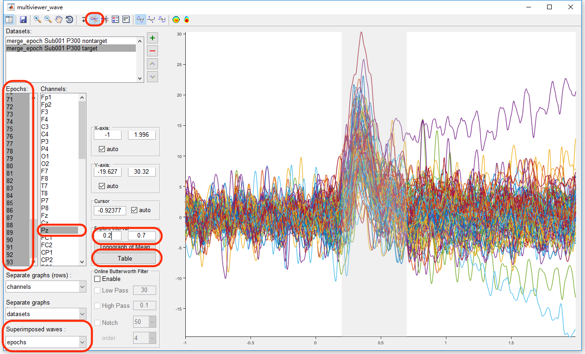
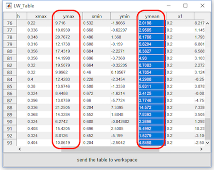
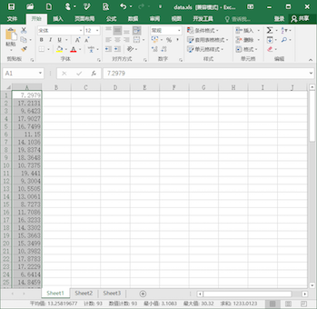
Similarly, select the datasets “merge_epoch Sub001 P300 nontarget” and press the button “Table”, pick up the same value on another dataset and copy it to the external softwave.
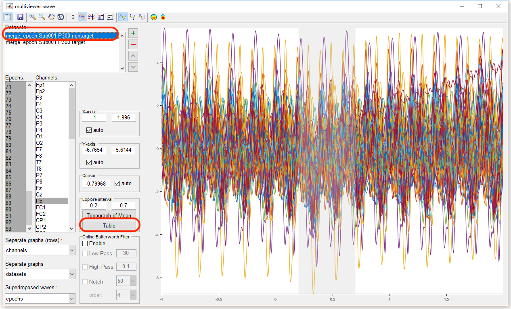
Then we can do the statistical inferences. Take the software Excel for example. Previously, we copy the maximum and mean value in the condition of target to column A and B, copy the maximum and mean value in the condition of target to column C and D. In item E1, input “=T.TEST(A:A,C:C,2,1)” for the paired-sample t-test on the maximum value. The result, p = 6.8 * 10^-40 indicates that for the maximum value of the EEG signal in the interval 0.2 to 0.7 s on channel Pz, there is a significant difference between the conditions of target and nontarget. Similarly, input “=T.TEST(A:A,C:C,2,1)” in item E2 for the paired-sample t-test on the mean value. The result, p = 3.2 * 10^-28 indicates that for the mean value of the EEG signal in the interval 0.2 to 0.7 s on channel Pz, there is a significant difference between the conditions of target and nontarget.
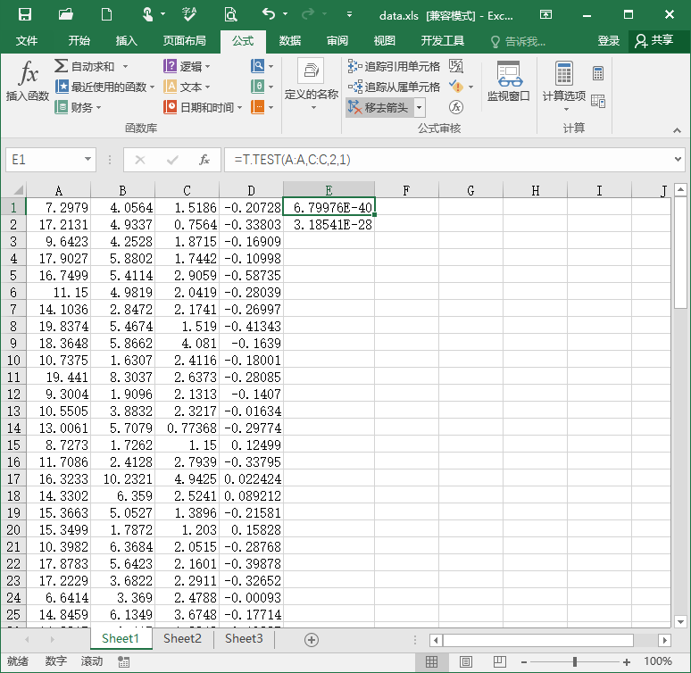
Data-driven Test
1. Point-wise T-Test
For the data-driven test, we need to do t-test for each time-channel point, which would lead to serious multiple comparison problem. For example, select the datasets “merge_epoch Sub001 P300 nontarget” and “merge_epoch Sub001 P300 target” and click “Statistics->Compare two datasets (paired sample/two sample t-test)”. Keep the dafault setting in the batch module, and click the button Run to get the pointwise ttest result “ttest merge_epoch Sub001 P300 target” in the manager module.
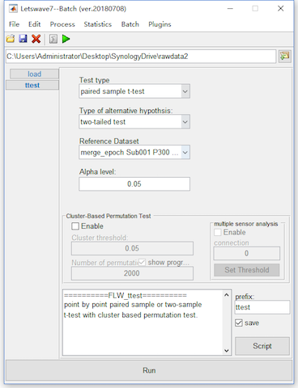
To watch the reuslt on Pz channel by clicking the view in the right-click menu, we set the channel as Pz, keep the index as p-value. Since we set the significant level alpha = 0.05, we can set the Y-axis as 0 to 0.05 to watch the interval with the p-value lower than 0.05. It could be find except the main cluster around 0.2-0.7 seconds, there are still several clusters in the other time intervals, even before the stimulus. Hence, it is observiouly that there is the family-wise error rate is high. The Bonferroni Correction would be conservative. Since there are 750 time points and 63 channels in the test, the corrected alpha value by Bonferroni method is 0.05/750/63 = 10^-6.
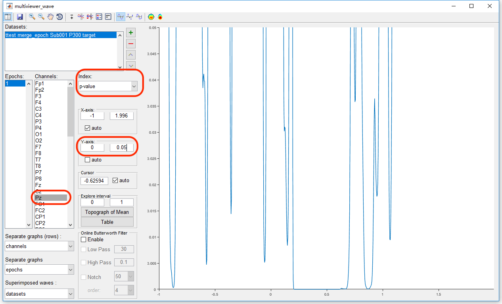
2. Cluster-based Permutation Test
Hence, we need to do cluster-based permutation test for the multiple comparsion correction. Letswave7 provides two ways for the cluster-based permutation test, which are single-sensor analysis and multi-sensor analysis.
2.1 Single-sensor analysis
For the cluster-based permutation test, we can detect the cluster for each channel separately. With the same way in the point-wise t-test, select the datasets “merge_epoch Sub001 P300 nontarget” and “merge_epoch Sub001 P300 target” and click “Statistics->Compare two datasets (paired sample/two sample t-test)”.
Enable the bottom panel for the Cluster-based Permutation Test. To get a more precise result, set the number of permutation as 20000, which would make the computation time consuming. Click the button Run, and it need more than 10 minutes for the computation. The result would be kept in the dataset with the same name “ttest merge_epoch Sub001 P300 target”.
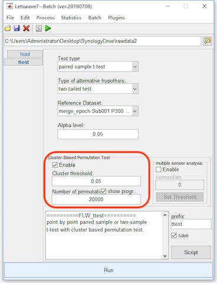
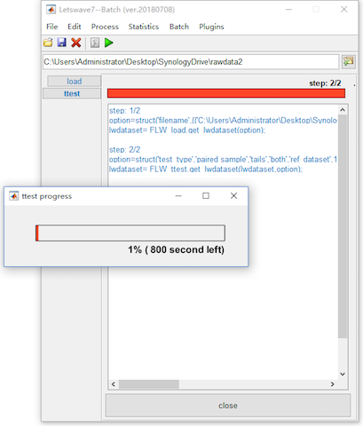
Open the dataset “ttest merge_epoch Sub001 P300 target” by clicking the view in the right-click menu. The uncorrected result is exactly the same as it is in the point-wise t-test. Set the index as “cluster p-value”, and set the cursor as 0.332, which is the peak of the P300 component. It can be found that only the main cluster on channel Pz is reserved after cluster-based permutation test, the other clusters are excluded as false positive.
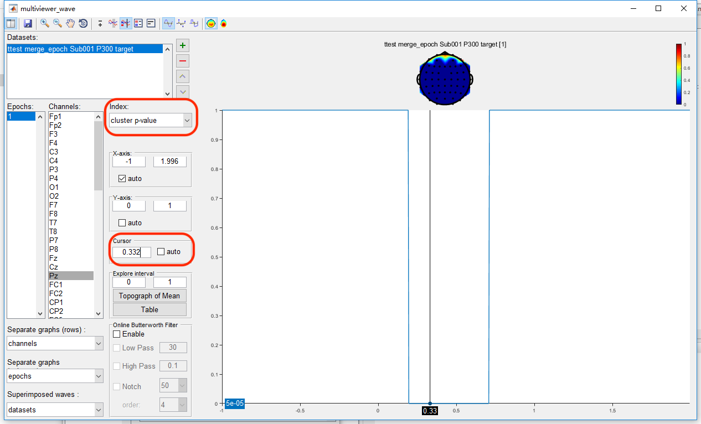
2.2 Multi-sensor analysis
On these datasets, we do the multi-sensor analysis by detecting the cluster in the time-spatial joint domain. Similarly, select the datasets “merge_epoch Sub001 P300 nontarget” and “merge_epoch Sub001 P300 target” and click “Statistics->Compare two datasets (paired sample/two sample t-test)”. Enable the bottom panel for the Cluster-based Permutation Test and set the number of permutation as 20000.
For the multi-sensor analysis, we just need to enable the “Multi-sensor analysis” and define the connection by setting the threshold. The two channels with their distance lower than the threshold is considered as neighbours. It is found with the threshold 0.16, all the channels become a connected graph. Hence, we set the threshold as 0.16. Click the button Run, and it may need more than 1 hour for the computation. The result with the same name “ttest merge_epoch Sub001 P300 target” will cover the original dataset.
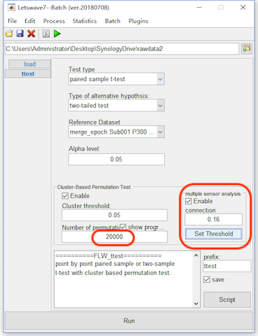

With the same way in the single-sensor analysis to watch the result. It can be found that more time interval on channel Pz is reserved. It is because in the time-spatial joint domain, they are considered as the same cluster.
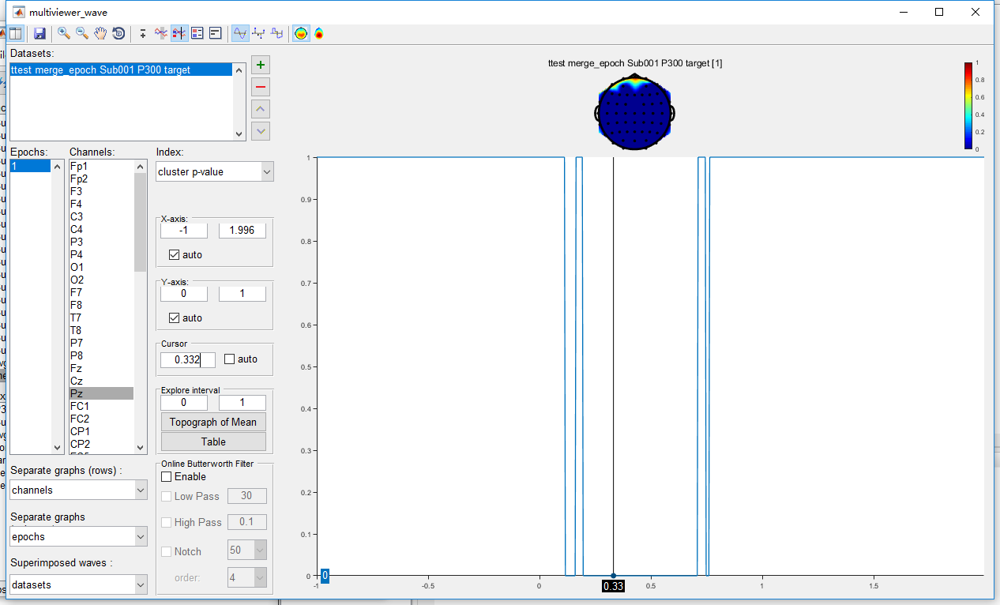